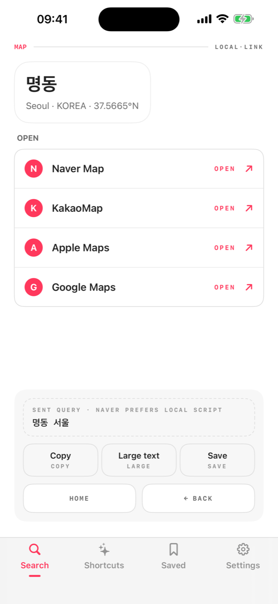
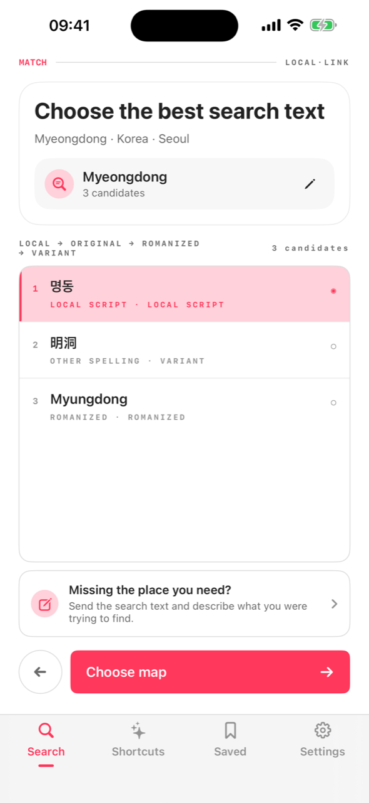
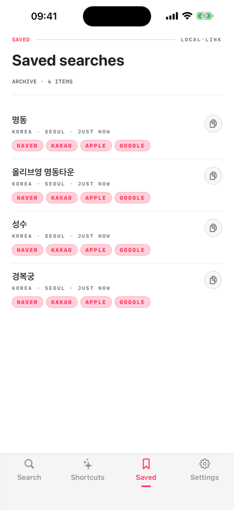

Google Maps barely works in Korea and not at all in China. Local Link converts the place names you know into local-script search text, then opens them in the map app locals actually use.

Choose the country and city. Local Link prepares searches that match how places are written there.
English, romanized, or local spelling — the app generates the local-script candidates that map services actually match.
One tap hands the converted search to Naver, Kakao, Amap, Google or Apple Maps. No app installed? It opens on the web.
Local map services index places in their own script. Searching “Myeongdong Kyoja” in English gets you nothing on Naver — 명동교자 gets you lunch.
Each destination gets the map apps that actually work there, in the right priority — with automatic web fallback when an app isn't installed.


The conversion data ships inside the app. Airport basement? Still converts.
Nothing to sign up for. No analytics leave your device.
Saved places follow you to your iPad — through your own iCloud, not our servers.
Curated searches per destination: coffee chains in Shanghai, beauty stores in Seoul.
English, 한국어, 日本語, 简体中文, 繁體中文 — UI and conversion both.
Show the local script full-screen to a taxi driver, or copy it anywhere.